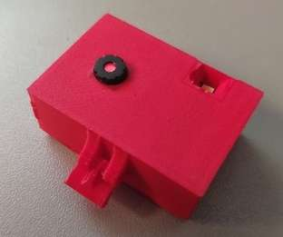

What
The Zephyr Project is an open-source effort to provide a lean “Real-Time Operating System” (RTOS). It’s focus is on IoT devices such as tooth brushes, smart watches, IoT gateways, etc.
The Esp32-Cam is a small <10 USD low-resolution camera board. The image quality is not very good and the boards don’t run very stably and tend to overheat without proper cooling, but they are cheap and most issues can be fixed.
The Zephyr Project supports [2] the Esp32 chips making them an ideal candidate for first experimentation with Zeyphr.
Contents
When
I’ve been using ESP32-Cam modules to monitor my 3D printer and CNC mill that are located in another room.
For this the sample code provided with the espressif SDK [3] was sufficient.
The video stream can be received with FFmpeg and OBS-Studio, but for this I couldn’t get the sample code working. It seems to send a broken MJPEG-stream. No player I had was able to play it apart from the Web browser via the web interface provided by the sample. Someone at Microsoft wrote an alternative firmware [4] that provides an RTSP-stream. That worked out of the box.
Why
Zephyr officially supports some of the Espressif boards. As they’re easily acquired, cheap boards with two ARM cores they’re and ideal for experimenting with Zepyhr [2].
Background
The ESP32 chip is a 32-bit micro-controller from Espressif with two cores that can clock in a range between 160 to 240 MHz. They have built-in WiFi, Bluetooth, UARTs, I2C, CAN interfaces. The ESP32-Cam boards have connectors that support cheap ov2640 camera modules.
How
Esp32Cam
As a first step let’s make sure we have a properly functioning Esp32Cam board.
Esp32Cam Arduino Configuration
Starting out it makes sense to first flash the official sample from Espressif via the Arduino IDE.
The configuration do this is as follows.
Wiring for Flashing
In order to flash ESP32-Cam boards you need to connect a USB-to-TTL adapter like the FTDI FT232.

Test with official Sample Code
With the board manager configured and the chip connected to the computer via the RS232 you can flash the sample firmware. In the Arduino IDE you can select the “CameraWebServer” under File -> Examples -> ESP32 -> Camera -> CameraWebServer
With the camera module connected and the web interface opened we can see the image from the camera in the browser.
For RTSP streams
The stream should work in the web browser, but likely not in other video applications as the sample code streams a somewhat incompatible MJPEG stream. It didn’t work in any of the applications I tried.
vlc -vvv http://192.168.2.138/mjpeg/1
ffplay -i "http://192.168.2.138/mjpeg/1"
mpv http://192.168.2.138/mjpeg/1
I’ve had more luck with an RTSP code found on Github [5,4]
With it you can open the stream with VLC or use the stream in ObsStudio directly.
cvlc rtsp://192.168.2.138:8554/mjpeg/1
Heat
However the boards develop substantial heat. The case from Thingiverse [6] I had 3D printed melted after using the camera for a few hours destroying not only the case, but also the plastic of the camera focus.
I’m not sure how much heat is required to ignite the 3D printing filament. PLA is typically printed at 180 Degrees Celsius. So that’s the approximate temperature the camera must have reached in order to deform the plastic.

Zephyr
With the ESP32-Cam confirmed to be fully functioning we can move to setting up a Zephyr build environment.
I’ll use a newly installed machine (running Debian 12 “bookworm”) to develop on, so I can be sure I don’t miss any dependencies that were still on the system from before.
Install “west” meta-tool
Zephyr uses a tool called “west” to manage initializing and building your code. It’s available via Pythons pip package manager.
So we install pip, thereby also python and the west tool via pip.
sudo apt install pip
pip install west
I had to add the “west” tool to the path variable for it to be found
export PATH=$PATH:$HOME/.local/bin/
Debian Pip Warnings
Newer pip on Debian has an “externally managed” warning when installing libraries globally such as west.
Keeping that blocked may or not make sense depending on environment. A simple hack around this is:
sudo mv /usr/lib/python3.11/EXTERNALLY-MANAGED /usr/lib/python3.11/EXTERNALLY-MANAGED.old
Create a new project, get dependencies
mkdir $HOME/zephyr
cd $HOME/zephyr
west init
That will checkout https://github.com/zephyrproject-rtos/zephyr.
In that repository there is a west.yml that references 64 GitHub repositories. These are downloaded with west update.
west update
Check Board configurations
You can look-up the supported boards.
west boards | grep esp32
esp32c3_devkitm
esp32s2_saola
esp32_ethernet_kit
esp32s3_devkitm
esp32_devkitc_wrover
esp32_devkitc_wroom
olimex_esp32_evb
esp32c3_luatos_core
esp32s3_luatos_core
esp32s2_lolin_mini
xiao_esp32s3
xiao_esp32c3
esp32s2_franzininho
yd_esp32
Overlay for Esp32Cam
According to [7] the “esp32_devkitc_wroom” board is very similar to the ESP32-Cam.
So, in order to add support for the ESP32-Board, we can add an “overlay” in the sample code directory. I’m using the code mentioned posted in that GitHub Issue.
mkdir $HOME/zephyr/zephyr/samples/basic/blinky/boards/
vim $HOME/zephyr/zephyr/samples/basic/blinky/boards/esp32_devkitc_wroom.overlay
/ {
leds {
compatible="gpio-leds";
led_flash: led_flash {
gpios = <&gpio0 4 GPIO_ACTIVE_HIGH>;
label = "Flash LED";
};
};
aliases {
led0 = &led_flash;
};
};
Adapt Code to blink the Flash LED of the ESP32-Cam
#include <stdio.h>
#include <zephyr/kernel.h>
#include <zephyr/drivers/gpio.h>
#define SLEEP_TIME_MS 1000
#define LED0_NODE DT_ALIAS(led0)
static const struct gpio_dt_spec led = GPIO_DT_SPEC_GET(LED0_NODE, gpios);
int main(void) {
int ret;
bool led_state = true;
if (!gpio_is_ready_dt(&led)) {
return 0;
}
ret = gpio_pin_configure_dt(&led, GPIO_OUTPUT_ACTIVE);
if (ret < 0) {
return 0;
}
while (1) {
ret = gpio_pin_toggle_dt(&led);
if (ret < 0) {
return 0;
}
led_state = !led_state;
printf("LED state: %s\n", led_state ? "ON" : "OFF");
k_msleep(SLEEP_TIME_MS);
}
return 0;
}
Build Dependencies
Now in order to build you would run
cd $HOME/zephyr/zephyr/
west build -p always -b esp32_devkitc_wroom samples/basic/blinky
You will likely see an error.
Could not find a package configuration file provided by "Zephyr-sdk"
This is because we need need to setup some Zephyr Dependencies.
There is a very large zephyr-sdk-0.16.5_linux-x86_64.tar.xz archive that extracts to about 8 GB with lots of support libraries for platforms and boards we don’t need.
I’ll try to install only what is needed.
Install minimal SDK, CMake configuration and toolchain
cd $HOME/
wget https://github.com/zephyrproject-rtos/sdk-ng/releases/download/v0.16.5-1/zephyr-sdk-0.16.5-1_linux-x86_64_minimal.tar.xz
tar -xvf zephyr-sdk-0.16.5-1_linux-x86_64_minimal.tar.xz
zephyr-sdk-0.16.5-1/setup.sh
This is an interactive installer, install only the toolchain for esp32 by choosing “y” or “n”.
Install toolchains for all targets [y/n]? n
[..]
You may want to also enable the x86_64 toolchain that can be used with QEmu during development.
Install 'x86_64-zephyr-elf' toolchain [y/n]? y
Install 'xtensa-espressif_esp32_zephyr-elf' toolchain [y/n]? y
[..]
Install hosttools [y/n]? n
Note I’m not installing the hosttools from the minimal SDK as I’ll do that separately below.
Register Zephyr SDK CMake package [y/n]? y
The script places the CMake files in
~/.cmake/packages/Zephyr-sdk
The script also downloads and extracts the board toolchain “xtensa-espressif_esp32_zephyr-elf.tar.xz”.
Install hosttools
The hosttools contain some binaries like QEmu for a row of platforms. We need them in order to be able to run west debug and similar commands.
cd $HOME/
wget https://github.com/zephyrproject-rtos/sdk-ng/releases/download/v0.16.5-1/hosttools_linux-x86_64.tar.xz
tar -xvf hosttools_linux-x86_64.tar.xz
./zephyr-sdk-x86_64-hosttools-standalone-0.9.sh
That will install the hosttools to
/opt/zephyr-sdk/0.9
To use them you need to source a script
source /opt/zephyr-sdk/0.9/environment-setup-x86_64-pokysdk-linux
that will set up the path variables.
Missing ninja build tool
Zephyr builds using “ninja”. If you don’t have it installed you can get it via apt:
sudo apt install ninja-build
otherwise you’ll see
CMake Error: CMake was unable to find a build program corresponding to "Ninja". CMAKE_MAKE_PROGRAM is not set. You probably need to select a different build tool.
Moving directories
As an additional note I’ve experimented with moving the Zephyr directory after configuration. This leads to errors in “pristine.cmake”. It seems some paths get hard coded.
Interestingly there is a commend in that “pristine.cmake” file
# NB: This could be dangerous to execute.
Deprecation Warnings
There are some non-critical deprecation warnings
CMake Warning at zephyr/zephyr/cmake/modules/boards.cmake:105 (message):
Deprecated BOARD=esp32_devkitc_wroom specified, board automatically changed
to: esp32_devkitc_wroom/esp32/procpu
Additional Build Requirements
pip install pyelftools pyserial
Note there is also “serial”, but it conflicts. So you’ll need to remove it, if it was installed or run this in VirtualEnv.
Build
With all that setup we can build flash images for the ESP32.
cd $HOME/zephyr/zephyr/
export PATH=$PATH:$HOME/.local/bin/
source /opt/zephyr-sdk/0.9/environment-setup-x86_64-pokysdk-linux
west build -p always -b esp32_devkitc_wroom samples/basic/blinky
Flash
In order to flash all we have to do is move into the directory and call west flash
cd $HOME/zephyr/zephyr/
west flash -d build/ --skip-rebuild --esp-device /dev/ttyUSB0
For this the serial connection on my system is /dev/ttyUSB0 and it needs to be accessable by your user.
You may need to add you user to the dialout group and/or chmod a+rw /dev/ttyUSB* for this to work.
On my system I can verify the serial port is writable by:
ls -al /dev/ttyUSB0
crw-rw----+ 1 root dialout 188, 0 Mär 17 10:08 /dev/ttyUSB0

Also keep in mind that with ESP32-CAM modules you have to wire bridge pin 100 and GND in order to put the chip in flash mode.
Afterwards, to run you software, you need to remove that wire bridge.
and you’ll see the Flash LED blinking as in the image above
Debug
You should see the pins on the FTDI flashing. If we open a serial console with the proper baud rate we see the data being transmitted from the chip
picocom /dev/ttyUSB0 -b 115200
Progress
Conclusion
We’ve tested the ESP32-Cam to make sure it works. After that we’ve set up the Zephyr environment, compiled the blinky LED example code and flashed it to the ESP32-Cam board.
1] https://www.zephyrproject.org/ 2] https://docs.zephyrproject.org/latest/boards/espressif/esp32_devkitc_wroom/doc/index.html 3] https://github.com/espressif/arduino-esp32/tree/master/libraries/ESP32/examples/Camera/CameraWebServer 4] https://sandervandevelde.wordpress.com/2020/07/02/turn-your-m5cam-into-a-webcam-exposing-rtsp-stream/ 5] https://github.com/Ingurum/rtsp-video-streamer-diy-14 6] https://www.thingiverse.com/thing:4760797 7] https://github.com/zephyrproject-rtos/zephyr/discussions/65244